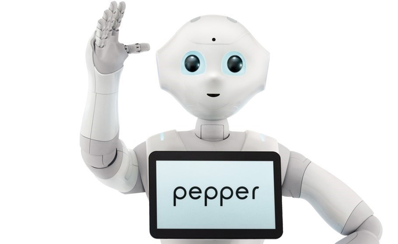
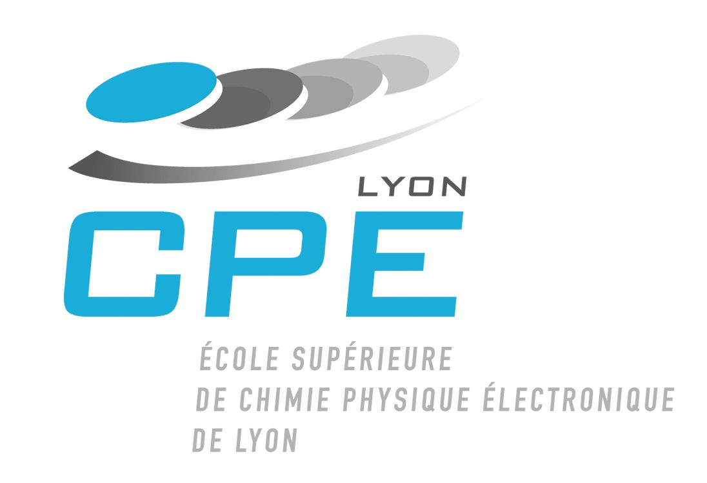

CLASSES PREPA CPE LYON



A votre arrivée à CPE Lyon en année 3, vous commencerez par étudier les modules de « tronc commun » pendant 3 semestres (semestres 5, 6 et 7). Comprenez : toute la promotion suit les mêmes modules, tous ensemble ou par groupes (TPs, TDs, projets, langues…).Ensuite, par le choix d’une majeure, les deux derniers semestres suivis du projet de fin d’étude ont pour objectif de vous accompagner dans la maturité de votre projet professionnel en approfondissant vos connaissances issues du tronc commun et en acquérant de nouveaux concepts et méthodes, directement en lien avec les problématiques technologiques issues du monde Industriel et de la Recherche.
A votre arrivée à CPE Lyon en année 3, vous commencerez par étudier les modules de « tronc commun » pendant 3 semestres (semestres 5, 6 et 7). Comprenez : toute la promotion suit les mêmes modules, tous ensemble ou par groupes (TPs, TDs, projets, langues…). A partir de la fin du semestre 7 et pendant tout le semestre 8, vous pourrez choisir vos modules parmi 5 séries proposant elles-mêmes chacune à 3 à 5 modules au choix : « chimie médicinale », « chimie nucléaire », « stratégies d’analyse », « nanomatériaux », « cosmétologie » sont quelques exemples de ces modules au choix dits « semi-optionnels ».
Les points forts de la formation:Combinaison d’un apprentissage en entreprise et d’un enseignement scientifique et technique de haut niveau. Expérience professionnelle permettant de conduire de vrais projets sur des technologies innovantes dans un secteur porteur et créateur d’emploi. Pluridisciplinarité (3/4 de tronc commun), mais aussi une bonne spécialisation (1/4 de la formation) dans l’une des 3 majeures. 2 mois minimum d’expérience dans une entreprise à l’international. Formation gratuite et rémunérée.